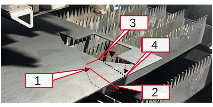

工作偏移
机床可以通过多种方式确定工作偏移量。

2点边缘检测
当您需要将工作偏移量设置在材料边缘上时，此选项有用。机床会要求您将喷嘴点动到第一点， 并自动确定板材的角落。此功能速度快且适合放置在板材一角的小零件。
| 2点策略的准确性受到机床准确性的限制，因此不适用于要切割的完整板材。 |
该逻辑的工作原理如下：

-
您使用激光选择靠近所需零位的位置。
-
机床从您启动的位置向X方向进行角落搜索。
-
机床在 两个剑栅之间最近的中心 进行角落搜索。 这将最大限度地提高角落测量的准确性。
-
机床到达找到的角落，确认后切割零件。
3点边缘检测
3点法更准确，需要完整板材上的3个测量点。它假设我们在工作台上有一张完整的板材（>1000x2000）并在x300、x1500和y300进行三次角落搜索，以找到零点。它是切割完整板材的首选方法。

| 如果在剑栅顶部执行边缘检测，它将产生不准确的结果。因此，机床会自动选择两个剑栅间的位置。 |
| 在激光加工机床中应用三点边缘检测之前，必须在Flux软件中指定板材尺寸。确保程序中指定的板材尺寸与机床中上料的实际板材相匹配， 确保引导二极管放置在板材的角落 |

在工作偏移菜单中选择3点边缘检测，将进行如下操作：
-
首先，将切割头移动到板材边缘（0,0）位置的导向二极管。
-
切割头将移动到此位置以找到板材的第一个边缘。
-
在检测到第一个边缘后，切割头将移动到第二个位置以查找板材的第二个边缘。
-
检测到第二个边缘后，切割头将找到板材的第三个边缘（以查找板材的斜率）。
-
确认后，工作头位置将自动移动到起始位置并执行切割过程。